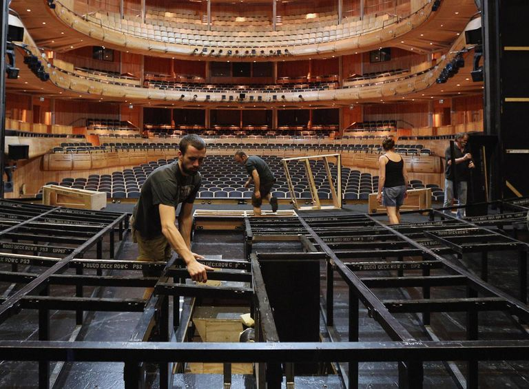
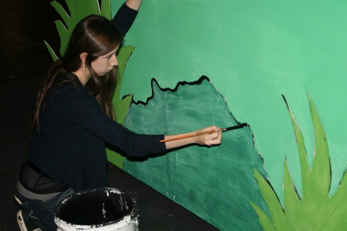

| Backstage production |
|---|
The tech crew, referred to as "techies" is responsible for any and all technical aspects of a production. This includes things like:
|  |  |
|---|
Techies are absolutley necessary for a production and do the small jobs that make the set perfect for production. Without techies, the actors would most certainly be lost.